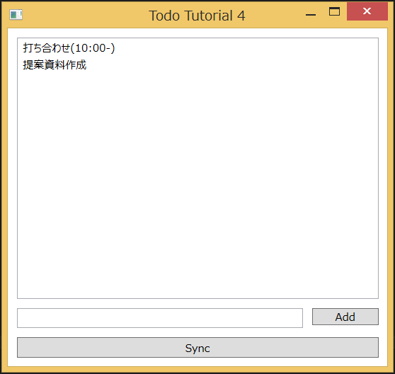
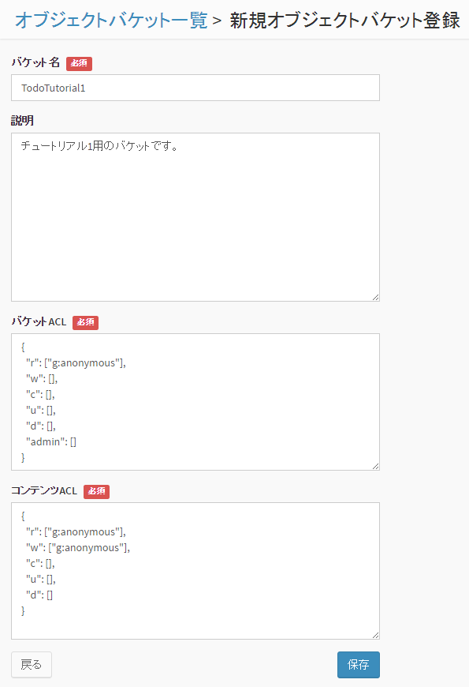
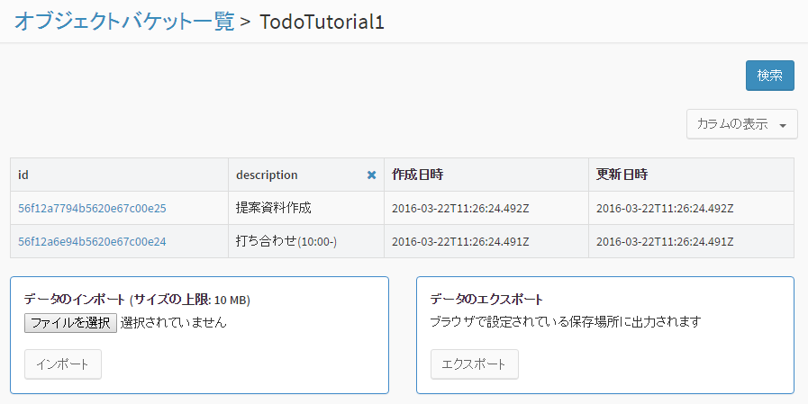
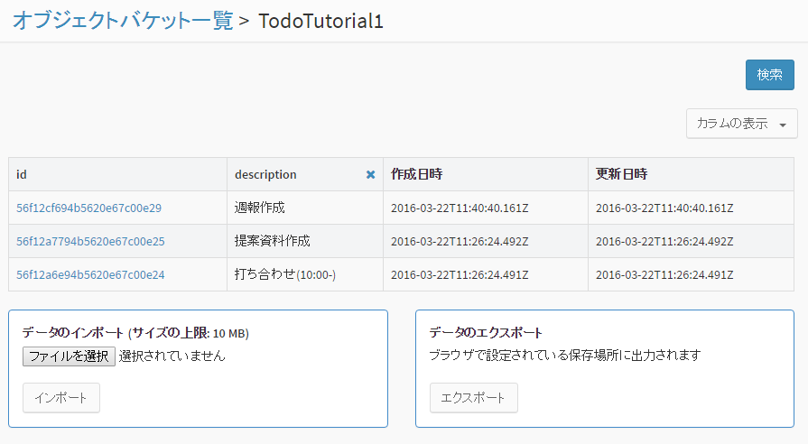

5. チュートリアル4 : TODOアプリ (オフライン対応)¶
このチュートリアルでは、オフライン機能に対応したToDoアプリを作成します。
{kind=link}
- Todo 項目を入力して追加したり、削除することができます。
- オフライン状態で Todo の追加・削除ができます。
- Todo は端末内のローカルデータベースに暗号化して保存されます。
- Sync ボタンを押すと、サーバのオブジェクトストレージと同期します。
- 本アプリは Windows 端末上で動作するアプリで、 C# で作成します。
5.1. 新規アプリケーションを作成¶
まず、 チュートリアル1と同様に、新規アプリケーションを作成します。
アプリケーションの作成方法は、 デベロッパーコンソール利用ガイド を参照してください。
アプリの作成が完了すると、アプリの詳細情報が表示されます。 ここで表示される「テナントID」「アプリケーションID」「アプリケーションキー」は アプリケーションの認証に使用する秘密情報です。 この3つは後ほど使用しますので、メモしておいてください。
5.2. バケットの作成¶
Todo 情報を格納するための「バケット」を作成します。チュートリアル1と同じバケットを使用しますので、作成済みの場合は飛ばしてください。
画面左の「オブジェクトバケット」⇒「追加」をクリックして、バケットを追加します。
{kind=link}
バケット名は "TodoTutorial1" としてください。(「4」ではなく「1」です。)
また、バケットのアクセス権限を変更し、誰でも(anonymousユーザ)バケットを読み書きできるようにします。 (デフォルトでは、認証ユーザしかバケットを読み書きできないようになっています）
「バケットACL」の r の行が "g:authenticated" となっていますので、 これを "g:anonymous" に変更してください。
また、「コンテンツACL」の r と w の行が "g:authenticated" となっていますので、 こちらも "g:anonymous" に変更してください。
5.3. サンプルコードの変更¶
チュートリアル4のサンプルコードを設定し、実際に動作させてみます。
まず、Visual Studio から tutorial4 を開きます。 「ファイル」⇒「開く」⇒「プロジェクト/ソリューション」を選択し、 tutorial4 ディレクトリにある tutorial4.sln を開いてください。
次に、 tutorial4/tutorial4 ディレクトリにある MainWindow.xaml.cs ファイルを開き、 MainWindow() に記載の定義を以下のように変更します。
public MainWindow()
{
InitializeComponent();
//Initialize Nebula
var service = NbService.GetInstance();
service.TenantId = "...";
service.AppId = "...";
service.AppKey = "...";
service.EndpointUrl = "https://api.example.com/api";
//Enable offline
NbOfflineService.EnableOfflineService(service, "1234567890");
//以下省略
}
- TenantId には テナントIDを設定してください。
- AppId にアプリケーションIDを設定してください。
- AppKey にアプリケーションキーを設定してください。
- EndpointUrl には、 NEC BaaS API サーバの URL を指定してください。
- NbOfflineService.EnableOfflineServiceの第2引数に暗号化パスワードを設定してください。
5.4. サンプルの実行¶
Visual Studio 上で、「ビルド」⇒「ソリューションのビルド」を選択し、 ビルドを実行します。
ビルドが成功すると、 tutorial4/tutorial4/bin/Debug に tutorial4.exe が作成されますので、タブルクリックして実行します。

この時点ではまだローカルにデータが無いため、何も表示されません。画面下部の Sync ボタンを押し、サーバと同期してください。サーバ側の Todo データがダウンロードされ表示されます。
画面下部のフォームに文字列を入力し、 Add ボタンを押すと、Todo が追加されます。ここでは「週報作成」という Todo を追加しました。まだ Sync ボタンは押さないでください。

次に、デベロッパーコンソール上のオブジェクトバケット一覧画面で、”TodoTutorial1” の「データ」を参照します。画面右上の「カラムの表示」から「description」を選択してください。
{kind=link}
先ほど追加した Todo データ(週報作成)はサーバ側に反映されていないことが分かります。
次に、アプリの Sync ボタンを押下します。これにより、サーバ側と Todo データを同期します。
再びデベロッパーコンソール上のオブジェクトバケット一覧画面で、”TodoTutorial1” の「データ」を参照します。
{kind=link}
同期を行いましたので、サーバ側に Todo (週報作成)が反映されたことが分かります。
このように、ローカルで一時的に処理を行いたいときや、ネットワークが一時的に利用できないときなどにおいて、オフラインで処理を行うことができます。
なお、Todo を選択し、Delete キーを押下すると、削除となります。ここでは、Todo の追加に関する同期を行いましたが、削除も同様に同期することができますので試してみてください。